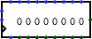

Сдвиговый регистр
Сдвиговый регистр
| Библиотека: |
Память |
| Введён в: |
2.3.0 |
| Внешний вид: |
 |
Поведение
Этот регистр состоит из нескольких ступеней; каждое срабатывание тактового входа может привести к тому, что каждая ступень получит значение предыдущей ступени, а новое значение загрузится в первую ступень. Компонент также опционально поддерживает параллельное чтение и запись значений всех ступеней.
Вход Очистка асинхронно сбрасывает все ступени на 0 (все нули); кроме того, пока на входе Очистка 1, все значения фиксированы на 0, вне зависимости от тактового входа.
Контакты
* Звёздочкой отмечены контакты, существующие только когда атрибут Параллельная загрузка включен.
- Западный край, верхний контакт (вход, разрядность равна 1)
- Сдвиг: когда на нём 1 или он не подключен, все ступени сдвигаются при срабатывании тактового входа; но если на нём 0, никакого сдвига не происходит. Этот вход игнорируется, если на входе Загрузка 1.
- Западный край, средний контакт (вход, разрядность соответствует атрибуту Биты данных)
- Данные: при продвижении ступеней значение с этого входа загружается в первую ступень.
- Западный край, нижний контакт, отмечен треугольником (вход, разрядность равна 1)
- Тактовый вход: в момент срабатывания этого входа, как указано в атрибуте Срабатывание, компонент может сдвинуть ступени или загрузить новые значения.
- *Северный край, левый контакт (вход, разрядность равна 1)
- Загрузка: когда на этом входе 1, значения с остальных контактов на северном крае загружаются во все ступени при следующем срабатывании тактового входа. Когда на нём 0 или он не подключен, никакой загрузки не происходит.
- *Северный край, остальные контакты (вход, разрядность соответствует атрибуту Биты данных)
- Данные: эти значения загружаются во все ступени при срабатывании тактового входа, пока на входе Загрузка 1. Крайний левый вход соответствует младшей ступени.
- Южный край, левый контакт (вход, разрядность равна 1)
- Очистка: когда значение равно 1, все ступени асинхронно сбрасываются на 0, и все другие входы игнорируются.
- *Южный край, остальные контакты (выход, разрядность соответствует атрибуту Биты данных)
- Выход: выдаёт значение, хранящееся в каждой ступени; младшая ступень отражена в крайнем левом контакте (рядом со входом Очистка).
- Восточный край (выход, разрядность соответствует атрибуту Биты данных)
- Выход: выдаёт значение, хранящееся в последней (старшей) ступени.
Атрибуты
Когда компонент выбран, или уже добавлен, клавиши от 0 до 9 меняют его атрибут Количество ступеней
, а комбинации от Alt-0 до Alt-9 меняют его атрибут Биты данных
.
- Биты данных
- Разрядность значений, хранящихся в каждой ступени.
- Количество ступеней
- Количество ступеней, включенных в компонент.
- Параллельная загрузка
- Если
Да
, то компонент содержит входы и выходы для параллельного доступа к значениям всех ступеней.
- Срабатывание
- Определяет, как обрабатывается тактовый вход. Значение
Передний фронт
означает, что регистр должен обновляться в момент, когда значение на тактовом входе меняется с 0 на 1. Значение Задний фронт
означает, что он должен обновляться, когда значение на тактовом входе меняется с 1 на 0.
- Метка
- Текст внутри метки, привязанной к компоненту.
- Шрифт метки
- Шрифт, которым отрисовывается метка.
Поведение Инструмента Нажатие
Если значение атрибута Параллельная загрузка - Нет, или если атрибут Биты данных больше 4, то нажатие на компонент не даёт никакого эффекта. В противном случае нажатие на компонент передаст фокус клавиатуры нажатой ступени (обозначается красным прямоугольником), и ввод шестнадцатеричных цифр будет изменять значение, хранящееся в этой ступени.
Поведение Инструмента Текст
Позволяет редактировать привязанную к компоненту метку.
Назад к Справке по библиотеке